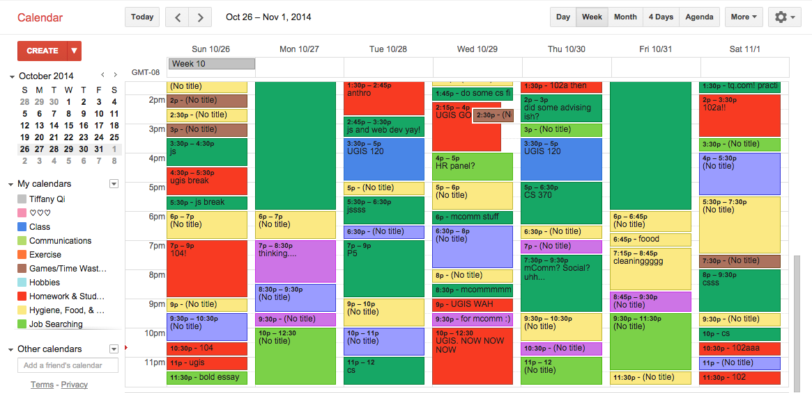
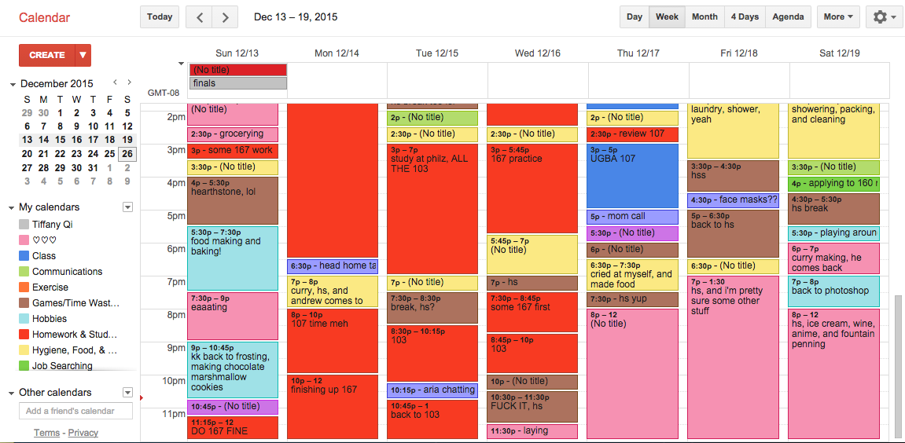

Hi there, and welcome to my Productivity Project. Since I started college at UC Berkeley, I have been tracking my productivity through Google Calendar, then migrating the data onto a spreadsheet through a calculator application I built called CalenTools for the command line. With this information, I thought it would be fun to take all this data, analyze it, and make some conclusions about how time management and grades all correlate using Google Charts.
As such, this project is an analysis of one person's life, and should not be taken as absolute fact. I found this data interesting to share, and hope that it helps you when you think that one test can make or break your grade. Here is the data, and if you're interested in a high level overview, feel free to check out my post.
My name is Tiffany Qi, and I graduated from UC Berkeley in Sring 2016, studying Business Administration. I primarily took classes in the Undergraduate Business Administration department, but have dabbled into language-related courses, psychology, and computer science. As such, this data hinges on those specific areas, and thus is not fully comprehensive of all departments at Berkeley.
I was an above-average student with a final GPA of 3.55. The average GPA at Haas is a 3.4. I did pretty well when I first started college and received a 3.8 my first semester, then it fell pretty consistently to 3.52 until my last semester.
I studied a lot of classes outside of my major, and I typically took on heavy workloads throughout my college career. I did 42 letter-graded classes in total, 20 of which were in my major, which means more than half of the classes I took here were not business-related! Most of these classes did not fulfill general education requirements. This is an average of 17.3 units and around 5 classes per semester, whereas most students tend to take 15-16 units and around 4 classes. On top of letter-graded units, I frequently tacked Pass/No Pass classes (such as academic interning, computer science, breadth or teaching techniques) on top of that.
I spent a lot of my time on extra-curricular activities, which comprised more than half of all my productive time. I was somewhat of a workaholic, but I enjoyed these activities considerably. Thus, while I highly enjoyed my activities, I classified it in my calendar as work and productive time. For now, "fun" is defined as time set aside for something non-work related.
I am interested in these points:
While I took basic statistics in high school and in college, I do not have a background in data science or analysis. Thus, my analysis is limited to the lens of linear correlations and timescales. If you'd like to play with my data, feel free to contact me.
I will do my best to deeply analyze the data through the eyes of one student.
I am a Google Calendar Super User, and I am quite proud of that fact. Since November 2012, I have consistently logged my productive (and non-productive) moments of my life. (Most of Fall 2012 is an estimate of time spent except for the last two weeks of the semester.) As such, I am able to go back to any given day and reveal all the moments and feelings of the past. This improves my memory and gives me helpful insights along the way. Below are a couple of examples of a given week: one is of October 2014, while the other is slightly more recent at December 2015, which also happened to be the week of final exams.
You can see that each category is represented by a calendar of different colors. I describe each event with some description. Some are more obvious, such as sleep, and so many events have "No Title".
Each week, I calculate how much time I spend in each calendar, further calculating statistics about each class and activity I pursue. For this analysis, the calendar data I use are:
I split up each calendar and attribute it to each given category, which includes the specific class and activity. As such, I calculate productivity strictly from the first four calendars. I have other things like "fun", which is calcuated from hobbies, games & time wasters, and social (spending time talking or doing something with someone not work-related), and time with my significant other. I have more than three years worth of quantifiable data on my productive (and not so productive) moments.
There are a few statistics and college terms I use throughout the project. I define them below in case something doesn't make sense:
In addition to time, I also calculate grades very closely. This is typically a spreadsheet with every assignment and their weights to either recreate the exact percentage received at the end, or to estimate a percentage. I have lost specific test grades for the first four semesters. In addition, many classes do not release final exam grades, participation, or final course grades, so about half of the percentages here are likely estimates.
I also have some average grades on the site as well. I went on Schedule Builder, a UC Berkeley resource, to find the average grade associated with my class and its given semester. If a particular semester wasn't given, I took a look at previous semesters, and if it was a constant grade average, I used that one. If it didn't exist, I estimated.
At UC Berkeley, we use a 4.0 grading scale. In my graphs, I frequently use number representations to present results visually. This is what the specific scale looks like:
| A+ : 4.0 | B+ : 3.3 | C+ : 2.3 | D+ : 1.3 | F | 0 |
| A : 4.0 | B : 3.0 | C: 2.0 | D : 1.0 | ||
| A- : 3.7 | B- : 2.7 | C- : 1.7 | D- : 0.7 |
We also have Pass/No Pass grades, which is not represented in the GPA. I took six classes P/NP, three of which I do not have grades for. These six grades, despite being in this data, is not calculated in my GPA.
As for units and class sizes, this information was obtained on Schedule of Classes, another official UC Berkeley website.
DISCLAIMER: My findings here worked for me, but they may not work for you. Proceed with caution.
Let's get started.
The below graph is a visual display of all the time I spent in each semester on HW (homework & studying outside of class), Class time, OH (office hours, or time asking for help), Activities (extra-curriculars, jobs, internships--basically anything that wasn't class related), Planning (academic, life, etc.), and Job Hunting (searching, interviewing, etc). In Fall 2014, I was the least motivated academically but still spent more than half of my semester at my part-time job, tutoring, lab assisting, and spinning up a new student organization.
In terms of motivation, I peaked in Fall 2014 and tried my best to be a productive member of the student body. I still don't know how I managed to spend 1000+ hours in a semester productively. For context, if each semester is 16 weeks long, each week having 7 days and 24 hours in one day, then the duration of one semester is 24 x 7 x 16 = 2,688 hours long. According to these numbers, I spent over 40% of my time productively. I spent 30.6% of my time sleeping, which is approximately 7 hours a day. I spent more time working than I did sleeping. To put this into perspective, a full time job (assuming 40 hours/week) would be 24% of time spent. Throughout my college career, I was productive about 28% to 47% of the time. (The first calendar depicted a typical week in Fall 2014.)
So yeah, even though I was little crazy when it came to activities, the time I spent on my academics decreased. The most time I spent on my classes was in Spring 2013 (still a freshman in college).
Note: these graphs related to grades show up occasionally. If one or the other does not appear, please try refreshing until the other appears.
This graph compares my semester and cumulative GPAs. Over time, it appears that my GPA fell pretty consistently until my final semester. Sometimes, huge decreases in semester GPA does not affect cumulative GPA by that much. This is due to the decrease in units taken for a letter grade, which is reflected in the below graph.
In this graph, I show how many units and what my Semester GPA is like over time. I included P/NP units and divided it by 5 so that the overall trend fits on the GPA graph. You can see that I took more units in the beginning of college, and a bumpy road back to a more reasonable unit level.
In conclusion, my motivation peaked in Fall 2014, and fell throughout consecutive semesters. In addition, I spent time consistently across semesters on homework, and classes. I spent more time planning in the first half of college, and more time job hunting on the latter half. This next section will go into specific correlations.
I will be covering the following correlations:
Let's begin!
I have had the good fortune of documenting how much time I spent going to class, doing homework and studying, going to office hours, and studying before the semester. I went to most of my classes, as most were participation based. In addition, I only went to office hours diligently for my computer science classes, so there will be some bias there. Here, I'll provide some pictorials of grade earned and each of these four factors.
One reason for the consistent lack of linear correlation may be because there were two conflicting factors at play. One may be because although I may have went to class, studied, etc more, I had to in order to understand the material and my grade was still lower than the others. Another may be because I understood the material well, and as a result did not go to class. Since both phenomena happened, bimodal correlations wouldn't reflect in the data. Overall, there is no linear correlation between spending time in the class before the semester, studying, going to class, or going to office hours.
Next, I'd like to explore the relationship between test results and the grades received in the class. I classified "First Test" with either the first midterm, quiz, assignment, or essay. Some classes didn't have any of these, so those I left blank. "Final Test" was either the final exam, presentation, or paper. I avoided using a final quiz if there was one, as that may have been just a normal exam. Is there a correlation between studying your ass off and getting a good grade? Let's see.
Phew! That was a lot of information. Essentially, it appears that just as we learned in time spent vs. grade outcome, there is no or weak linear correlation between time spent on an exam vs the test and grade outcome. There also does not appear to be any linear correlation in terms of what the percentage is actually worth.
However, it appears that there is a moderate positive correlation between the first and final test scores, which seems to suggest that I did not improve too much between tests. In addition, there is a strong positive linear correlation between the grade received and the final grade, which shows that the final grade is still an extremely important factor in the final grade distributions. It makes sense that students continue to study a lot to do well on their final. And in some sense, their overall grade can improve if they do well on the final.
The next set of factors include how many units the class offered, and how big the class was in determining the final grade.
Overall, it appears that there isn't a correlation between units and the grade received. However, it appears that the notion that students need to spend more time on a higher unit course does hold true, but not by too much (only a moderate positive correlation). Finally, there does appear to be some negative impact of class size and the grade received in the class.
Now that we've explored certain aspects of how our grades turn out based on chosen factors such as how many units we take, how big the class is, or how much time we study; what about the other more human factors like having fun, sleeping, planning, job hunting, and participating in activities? I take each one in turn.
Note: There are only 8 data points here, so it's harder to make conclusions from sparse data.
I calculated "fun" as time spent on my hobbies like baking or doing jigsaw puzzles, hanging out with friends and family, hanging out with my boyfriend, and wasting time like playing games and watching TV. Each of these activities are logged in their respective calendars.
There are two questions I am interested here, and they are:
I measure this through the amount of time I spend versus units taken, grade, and how much time I spend on academics per semester.
Here's all the time I spent on fun. I didn't start a "hobbies" or "fun" section in Fall 2012, which is why I do not have any data on it. I started dating my boyfriend in Spring 2015, which is why there is a sudden spike in this category from Spring 2015 to Spring 2016.
In conclusion:
According to this data, I slept pretty consistently throughout each semester from 800 to 900 hours of sleep. Let's look into the specifics.
One thing to note is that I didn't purposely experiment with my sleep schedule. While there can be correlations being drawn from the data, take it with a grain of salt.
While there doesn't appear to be a linear correlation between how many units I take and how much I sleep, as well as between how much time I spend on academics and sleep, the grade received and how much I sleep is moderately correlated. Thus, it's important to sleep consistently, and it may have an effect on grades!
Activities were a big part of my college experience. While I classify it as productive time, they were largely a release of stress and another way I could have fun at college. I ask the same questions here as in fun and sleep.
I've written about my activities before Fall 2014. I also interned at Go Overseas and worked part-time at Intera Growth Partners. After BCEC, BMC, and Perfect Fifth, I did a lot of teaching and tutoring in introductory computer science. I founded Computer Science Mentors, an organization focused on group tutoring in all introductory computer science courses. In total, I spent 670 hours in three semesters, which is a significant portion of my activities here.
Essentially, this data shows that everything is strongly negatively correlated with activities. Apparently without Fall 2014, I spend significantly less time on academics, my grades are lower, and my workload is lower if I have more activities.
However, I also want to point out that there was a reason that a semester like Fall 2014 exists. It was one of my favorite semesters, and while it was the most crazy, I did not receive a low GPA or a lower unit count, as a result. Thus, we cannot explain all these outcomes as a result to activities. In addition, I would not turn back the time and spend less time on activities, as this was one of my favorite parts of college.
I'm really big on planning. I would frequently plan out my four year schedule, tear them down, and make new ones, as well as figure out best ways to represent data on Google Calendar and my multiple spreadsheets. The question is here, would it have been more effective to use this time to study more rather than to plan?
As shown, I frequently spent more time planning in the beginning of my academic career than the end. The Fall 2012 number is actually only the last three weeks, and so I am sure I planned more throughout that semester.
Perhaps this worked out this way because I was more uncertain about my future at UC Berkeley or what my records of spreadsheets would like like than later semesters when I honed my craft. Now, I automate and use the same tools, which drastically reduces the amount of time to make them.
I've been told (and criticized) for the time I spent planning, and whether I would have been better off doing something else with that time. Well, there clearly isn't a linear correlation, so I think I'm in the clear.
The potential lack of job after graduation weighed on my mind throughout college, and so I attempted to gain more experience by applying to internships, and full time opportunities my senior year. This was one of my most stressful experiences throughout college, and would like to showcase it here as well.
Clearly I spent more time job hunting as time went on, as I felt more pressure to succeed.
There's a weak positive linear correlation between the grade received and this time. I don't have a great logical reason as to why this is the case, perhaps it's a coincidence.
Instead of isolating each piece, now I'm curious about whether all of the time I don't spend studying combined affects grades. with Fall 2012 removed (because I didn't track for the whole period), the treadline gooes in the opposite direction, suggesting a weak correlation between grade earned and the collective sum of sleep, activities, fun, jobs, and planning.
At UC Berkeley, grade deflation is a big thing that we stress over. The Daily Cal wrote an article about it, and shows a graph that compares the average grades of Harvard, Yale, Stanford, and UC Berkeley. There, UC Berkeley's average grade has been consistently under their counterparts. Here, I'd like to take a different approach. Does Berkeley award lower grades than our percentages in the class? Are classes at Cal naturally more difficult? Or, do the other schools just curve everyone upwards? I can't speak very much to the last question, but I can provide my own data on the first one.
Here is a chart of all of my grades and the percentages I received from each grade. Some of them are estimated, but I did my best to ask each of my professors what I received in certain areas in case the numbers were not updated online. The blue trendline shows the correlation between these two aspects, and the coefficient of correlation is 0.7007 and the coefficient of determination is 0.491, which shows that there is a strong positive linear correlation between grade received and the percentage received (which makes sense).
If there were no grade deflation or inflation, the line should be the thicker line you see here. This was calculated by assuming the minimum points for each grade are as follows:
And the maximum grade are as follows:
I took the average of these points and extended the thickness. Thus, the red line encapsulates all possible grades from their percentages received if grades were given on such scale. The red points are these averages.
As you can see, the majority of grades received falls under the red line, which shows that in reality, many grades are given out not by the hard set percentage, but perhaps from the curve in the class. Yes, these percentages are much lower, but classes purposefully give students a higher grade due to the difficulty of the class itself. Perhaps there isn't so much of a grade deflation as we make it to be, as professors purposefully increase grades to accomodate this.
One thing I want to connect to this analysis is class size. Above, I mention that small class sizes is one of the factors that Ivys boast about, and here we've discovered that there is a moderate negative correlation between the two. Perhaps one of the reasons UC Berkeley is known for "grade deflation" because the schools we are compared to are those with small class sizes? Just a thought.
Once again, this is solely about my data, and cannot be concluded about everyone. However, a certain grade in the class isn't just because of this-or-this, there is a wide variety of factors that play into a final grade, like how much time you study, and sleep. It's about the combination of points that create a final product.
TLDR; here are the results of my research.
Answers to Common Questions:
These results display only a 2-way relationship between factors and grades. Again, all of these factors impact the final grades. All I can do is isolate the findings and compare them against each other.
There are a lot of different factors at play when it comes to the final grades: how much time you sleep, have fun, study, go to class, test scores, etc. However, it is important to note that most likely it will not just be one of these factors that make or break your grade. They’re all important and work together to present your results at the end.
Here are some recommendations I’ve found from this analysis, and perhaps you’d find them helpful:
What do you think about this data and the conclusions I’ve presented here? I encourage all comments and look forward to an open discussion. I welcome anyone who'd like to discuss further about my results to comment and read about more feelings here. If you'd like the data, feel free to contact me as well.